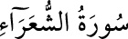

<a name=5807></a><br/>
<b>26- ŞUARÂ SÛRESİ</b><br/>
<i><b>Şuarâ sûresi, son dört âyet hâriç Mekke’de nâzil olmuştur. 227 âyettir.<br/>«Şuarâ», şâirler demektir. 224. âyette şâirlerden sözedildiği için, sûre bu ismi</b></i><br/>
<i><b>almıştır.</b></i><br/>
